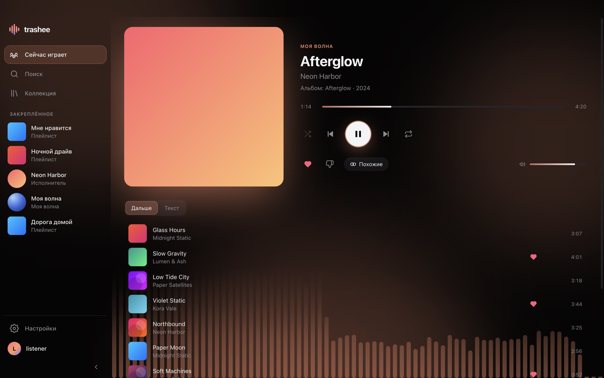
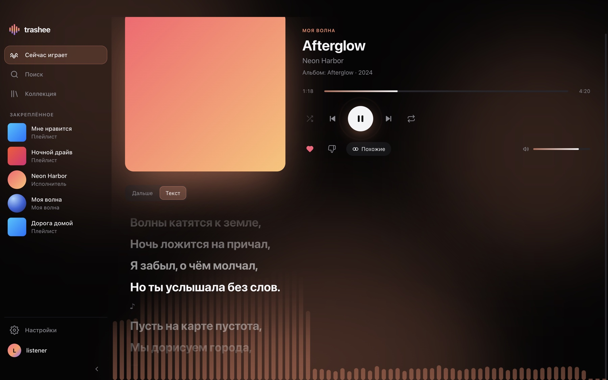
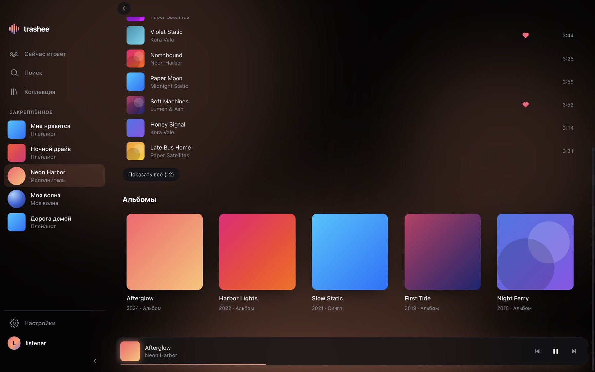
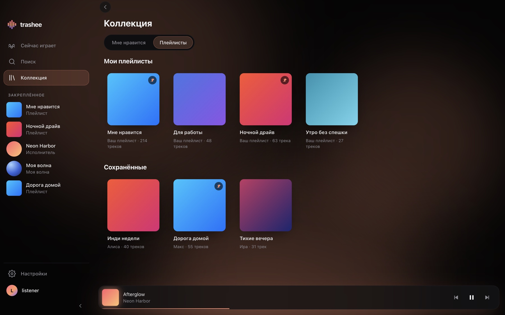
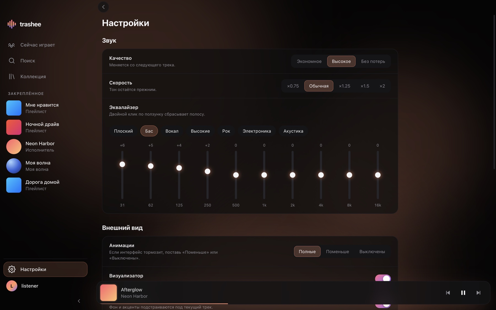

Моя волна
Бесконечное радио по твоим вкусам. Лайки и «не нравится» учитываются, как в официальном приложении.
Неофициальный клиент · бесплатно · открытый код
trashee — лёгкое приложение для macOS, Windows и Linux. Моя волна, синхронные тексты песен, эквалайзер и медиаклавиши в одном окне.

Возможности
Бесконечное радио по твоим вкусам. Лайки и «не нравится» учитываются, как в официальном приложении.
Строка подсвечивается вместе с песней и плавно прокручивается. Нажми на любую строку, и трек перемотается к ней.
Десять полос с пресетами и скорость от ×0,75 до ×2 без смены тона. Меняется на ходу, перезапускать ничего не нужно.
Свои и чужие плейлисты, альбомы и исполнители, которые ты закрепил в официальном приложении, сразу появляются в боковой панели.
Работает с клавишами на клавиатуре и плиткой плеера в системе: Now Playing на macOS, SMTC на Windows, MPRIS на Linux.
Фон и акценты подстраиваются под обложку, а внизу живёт визуализатор настоящего звука. Всё это можно приглушить или выключить в настройках.
Как выглядит




На скриншотах вымышленные исполнители и обложки: настоящие чужие обложки на сайте не показаны.
Скачать
Последняя версия на GitHub. Бесплатно, регистрация не нужна.
Apple Silicon и Intel
Apple Silicon.dmg Intel.dmgM1, M2, M3 и новее — «Apple Silicon». Старые Mac — «Intel».
Windows 10 и 11, 64 бита
Установщик.exeДвойной щелчок по файлу, дальше установщик всё сделает сам.
x86_64
AppImageодин файл Архив.tar.gzДля AppImage: chmod +x trashee-*.AppImage и запуск.
Это нормально: установщики пока не подписаны (подпись стоит денег), поэтому macOS и Windows осторожничают с неизвестными разработчиками.
Открой приложение правым кликом и выбери «Открыть». Или выполни в терминале:
xattr -cr /Applications/trashee.app
В окне SmartScreen нажми «Подробнее», затем «Выполнить в любом случае».
Контрольные суммы лежат в SHA256SUMS.txt рядом с установщиками.
Вопросы
Нет. trashee делает независимый разработчик, и Яндекс к нему не причастен. Приложение использует закрытое API сервиса, как и другие сторонние клиенты. Яндекс может изменить его без предупреждения, тогда что-то перестанет работать до обновления trashee.
Пароль ты вводишь только на странице Яндекса: trashee показывает код, ты вводишь его на сайте Яндекса и подтверждаешь вход. Приложение получает токен доступа и хранит его зашифрованным средствами системы (где она это поддерживает). Исходный код открыт, его можно прочитать.
trashee отдаёт то, что Яндекс позволяет твоему аккаунту. Качество «Без потерь» может требовать Плюс; без подписки Яндекс отдаёт лучшее из доступного.
Пока нет. Первая версия умеет слушать: Моя волна, поиск, коллекция, плейлисты, альбомы, исполнители, тексты и эквалайзер.
Напиши об этом в разделе Issues на GitHub: укажи систему, версию и что именно произошло.